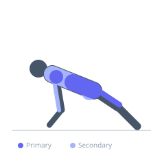
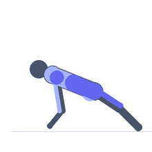

Exercise guide / Crawling Pattern
Crawling Pattern
The crawling pattern is a broad category of contralateral ground locomotion exercises performed close to the floor, including variations such as the leopard crawl, army crawl, and lateral crawl. All variations emphasize the same neurological contralateral coordination pattern as the bear crawl but with the torso positioned lower to the ground, further increasing the demands on shoulder stability, hip flexor engagement, and spinal control in a more mechanically challenging position.
Primary muscles
transverse abdominis
deltoid anterior
iliacus
Secondary muscles
pectoralis major sternal
triceps long head
gluteus maximus
Stabilizers
erector spinae
rectus abdominis
Equipment
No Equipment (Bodyweight)


Starting position
- Begin in a low plank or prone position depending on variation. For leopard crawl: in a low quadruped close to the floor.
Setup
- No equipment required. Adequate clean floor space for crawling distance. Consider knee pads on hard surfaces.
Steps
- Step 1: Begin in the low quadruped position with the body close to the floor.
- Step 2: Move contralaterally — right hand and left foot advance simultaneously.
- Step 3: Keep the torso parallel to and close to the floor throughout.
- Step 4: Continue forward for the prescribed distance, maintaining body position.
- Step 5: Can also be performed laterally, backward, or in combination patterns.
Coaching cues
- Stay low — belly close to the floor
- Opposite arm and leg
- Breathe through the movement
Breathing
- Breathe continuously. The low position can restrict breathing — keep breaths controlled.
Range of motion
- Full forward reach on each step. Body remains consistently close to the floor.
Tempo
- 10–20 meters per set. Quality of movement over speed.
Common mistakes
- Rising too high — the body should stay low to the floor
- Moving ipsilateral limbs — the contralateral pattern is essential
- Letting the core sag and hips drop to the floor
Safety
- Floor hygiene is relevant for direct skin contact in army-crawl variants.
- High hip flexor and shoulder demand — progress gradually.
Training
- endurance: 1–1 reps
- endurance: 3–5 sets
- Rest: {'endurance': 60}